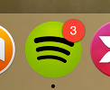
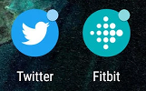

üóìÔ∏è April@w3c: #WoT meetup, @w3cx #MOOC, #W3CWorkshop, etc. More at https://www.w3.org/participate/eventscal.html
4 Apr.: The @wot #CommunityGroup organizes a meetup (online) on "Automated Industrial Asset Onboarding Using Open Standards" #WoT #IoT #interoperability https://www.w3.org/events/meetings/322db7e4-1a9f-44c6-8ddf-af601043dfb9
https://twitter.com/w3cdevs/status/164279773103797043311 Apr.: Join a new session of @w3cx #HTML5 and #CSS Fundamentals online course to learn basics of front-end Web development: https://www.edx.org/course/html5-and-css-fundamentals @edXOnline
https://twitter.com/w3cdevs/status/164279773651995443224 Apr.: Deadline to submit a position paper or a statement of interest to the "Secure the Web Forward" #W3CWorkshop jointly organized by @w3c, @owasp @theopenssf and @openjsf https://www.w3.org/2023/03/secure-the-web-forward/cfp.html #security #developers
https://twitter.com/w3cdevs/status/1642797739560804353#Translation #i18n #French https://twitter.com/webi18n/status/1643538438749052928
https://twitter.com/w3cdevs/status/1643556466006032384The Badging #API allows web #developers to set an application badge for installed #WebApps #PWA #timetogiveinput https://w3c.github.io/badging/ https://twitter.com/w3c/status/1643950234647535616
A badge is meant to notify the user that there is new activity such as showing the number of unread items. A badge can have one of these values: nothing, flag, a number. Examples of badges:

https://twitter.com/w3cdevs/status/1643956834141712385Check also the browser support for this feature on @MozDevnet: https://developer.mozilla.org/en-US/docs/Web/API/Badging_API#browser_compatibility
https://twitter.com/w3cdevs/status/1643956844841320449Read more in the #explainer: https://github.com/w3c/badging/blob/main/explainer.md
https://twitter.com/w3cdevs/status/1643956842064748544Time to join the @w3c Web #MachineLearning group of participants! https://www.w3.org/groups/wg/webmachinelearning/participants https://twitter.com/w3c/status/1643892599617384448
https://twitter.com/w3cdevs/status/1643966966669901824Layout in #CSS starts with boxes. The basic box is a rectangle with margins on all sides (to offset it from other boxes), a border, some padding (to separate the content from the border), and content (text, an image, other boxes).

Congrats to editor @fantasai and the @csswg for the newly published @w3c #WebStandard "CSS Box Model Module Level 3" #timetoadopt #CSS https://www.w3.org/TR/css-box-3/ https://twitter.com/w3c/status/1643902329555386369
https://twitter.com/w3cdevs/status/1644010398277074945CSS Box Level 3 is listed in the #CSS Snapshot 2023 document as a stable specification with enough implementation: https://www.w3.org/TR/css/
https://twitter.com/w3cdevs/status/1644010400827035648Back in May 2011, @w3c create Community Groups to enable #developers, #designers and anyone else to socialize their ideas for the #Web for possible future standardization. The program started with 6 groups, and by March 2023, this number reached 386!
But not all ideas manage to build momentum. In order to improve the visibility of active #CommunityGroups, we have just closed 208 of them that had been dormant for a while and that no-one stepped up to revive - https://www.w3.org/community/
https://twitter.com/w3cdevs/status/1646502756847431685Community Groups are a critical piece in @w3c of how new Web technologies emerge and how Web standards get incubated.
https://twitter.com/w3cdevs/status/1646502762039918595You are welcome to start a #CommunityGroup (or more!): pick a topic, write a short scope statement and get support from four other parties for the creation of the group. W3C provides the tools and infrastructure. Read more: https://www.w3.org/community/about/faq/
https://twitter.com/w3cdevs/status/1646502764044771330Have you come up with one or more discussion topics to drive #developer awareness and adoption of web #security standards and practices? The submission deadline is in a few days! #W3CWorkshop https://twitter.com/w3cdevs/status/1642797739560804353
https://twitter.com/w3cdevs/status/1648620524715556866Detailed program of the "#developer and #w3c track" is at https://whova.com/embedded/session/CoG3ZDaLVhS5fsXbJbIaNsrmRyKC8FXDou-fJSOCPz0%3D/3012598/ #TheWebConf2023
Interested in #PWA, #EPUB, Invisible markup, #WebSpeech, #WebAudio, and Solid? Join the Developer and W3C track @TheWebConf on 2 May 2023, in #Austin üá∫üá∏
https://www2023.thewebconf.org/
https://twitter.com/w3cdevs/status/1651122620480339970And do not miss the keynote on #DIDs by Clare Nelson (@Safe_SaaS), executive director of the Decentralized Identity Foundation (@DecentralizedID) #TheWebConf2023
https://whova.com/embedded/session/CoG3ZDaLVhS5fsXbJbIaNsrmRyKC8FXDou-fJSOCPz0%3D/3023960/
https://twitter.com/w3cdevs/status/1651122623013691393